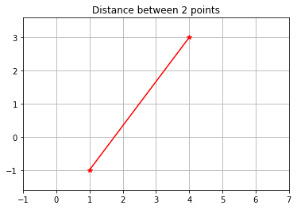
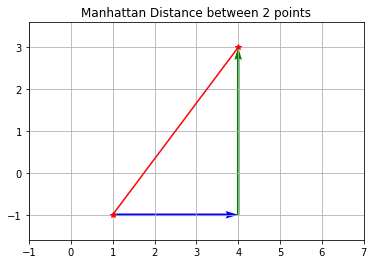

import numpy as np
from numpy.linalg import *
## In Python:
## Let's define two points:
a=np.array([4,3])
b=np.array([1,-1])
##and find the distance between them:
norm(a-b)
5.0The distance between two points \((x_1, y_1)\) and \((x_2, y_2)\) is given by:
\[\|(x_2, y_2)-(x_1, y_1)\|= d = \sqrt{(x_2-x_1)^2+(y_2-y_1)^2}\]
We use the bars \(\|\cdot\|\) to mean “distance”.
We can extend this to as many dimensions as we want:
\[\|(x_2, y_2, z_2, w_2)-(x_1, y_1, z_1, w_1)\|= d = \sqrt{(x_2-x_1)^2+(y_2-y1)^2+(z_2-z_1)^2+(w_2-w_1)^2}\]
For example:
\[\|(4, 3)-(3,-1)\|= d = \sqrt{(4-1)^2+(3+1)^2}= \sqrt{25} = 5\]
import numpy as np
from numpy.linalg import *
## In Python:
## Let's define two points:
a=np.array([4,3])
b=np.array([1,-1])
##and find the distance between them:
norm(a-b)
5.0## And let's graph it:
import matplotlib.pyplot as plt
plt.plot([a[0],b[0]], [a[1],b[1]], 'red', linestyle='-', marker='*')
plt.axis('equal') ## This is important to get the display correct
plt.title('Distance between 2 points')
plt.xticks(range(-1,8))
plt.yticks(range(-5,8))
# Show plot with grid
plt.grid()
##always important to actually display!
plt.show() 
Yes. Yes it is. Hopefully, you can see that the distance betweeen 2 points is the magnituge of the vector found by subtracting one from the other. Phew!
But what this (should) lead to is… Are there different ways of finding distance? What if you lived in Manhatten, and needed to drive - hten calculating a diagonal distance doesn’t make much sense.
I’m not going through a formal defintion, but we can develop math with the basic idea of “distance”, then sub in any way of calculating distance that we choose.
Depending on where you read, this distance measure has many names. I’m not going through a formal defintion, but we can develop math with the basic idea of “distance”, then sub in any way of calculating distance that we choose.
Here, Instead of squaring and square rooting, we are going to take the absolute value:
\[\|(x_2, y_2)-(x_1, y_1)\|= d = |x_2-x_1|+|y_2-y_1|\]
so:
\[\|(4, 3)-(3,-1)\|= d = |4-1|+|3+1|= 3+4 = 7\]
## Can I do this in Python? Sure! set ord = 1
print("The Manhattan norm is ",norm(a-b, ord =1))
#graphically:
##put in our old distance in red
plt.plot([a[0],b[0]], [a[1],b[1]], 'red', linestyle='-', marker='*')
## first we go along the x axis, 3 blocks (in blue)
plt.quiver(b[0], b[1], (a[0]-b[0]), 0, color='b', units='xy', scale=1)
##then we go up 4 blocks:
#plt.quiver(b[0], b[1], (a[0]-b[0]), 0, color='b', units='xy', scale=1)
plt.quiver(a[0],b[1], 0,(a[1]-b[1]), color='g', units='xy', scale=1)
plt.axis('equal') ## This is important to get the display correct
plt.title('Manhattan Distance between 2 points')
plt.xticks(range(-1,8))
plt.yticks(range(-5,8))
# Show plot with grid
plt.grid()
##always important to actually display!
plt.show() The Manhattan norm is 7.0
But it’s 7 blocks - 3 to the right, and 4 up. Phew! Are there more?
The L3 distance between two points \((x_1, y_1)\) and \((x_2, y_2)\) is given by:
\[\|(x_2, y_2)-(x_1, y_1)\|= d = \sqrt[3]{(x_2-x_1)^3+(y_2-y_1)^3}\]
For example:
\[\|(4, 3)-(3,-1)\|= d = \sqrt[3]{(4-1)^3+(3+1)^3}= \sqrt[3]{4.4979} = ?\]
## Try ord = 3.....
## arithmatic from above:
ans = ((3)**3+(4)**3)**(1/3)
print("Using arithmatic, the answer is ", ans)
##Can I do this in Python? Sure! set ord = 3
print("The L3 norm is ",norm(a-b, ord =3))
Using arithmatic, the answer is 4.497941445275415
The L3 norm is 4.497941445275415